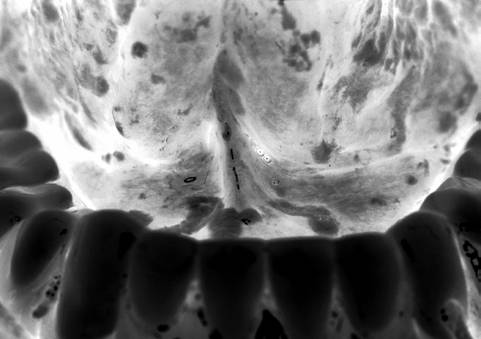
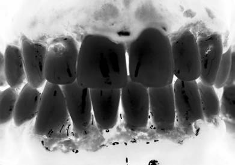
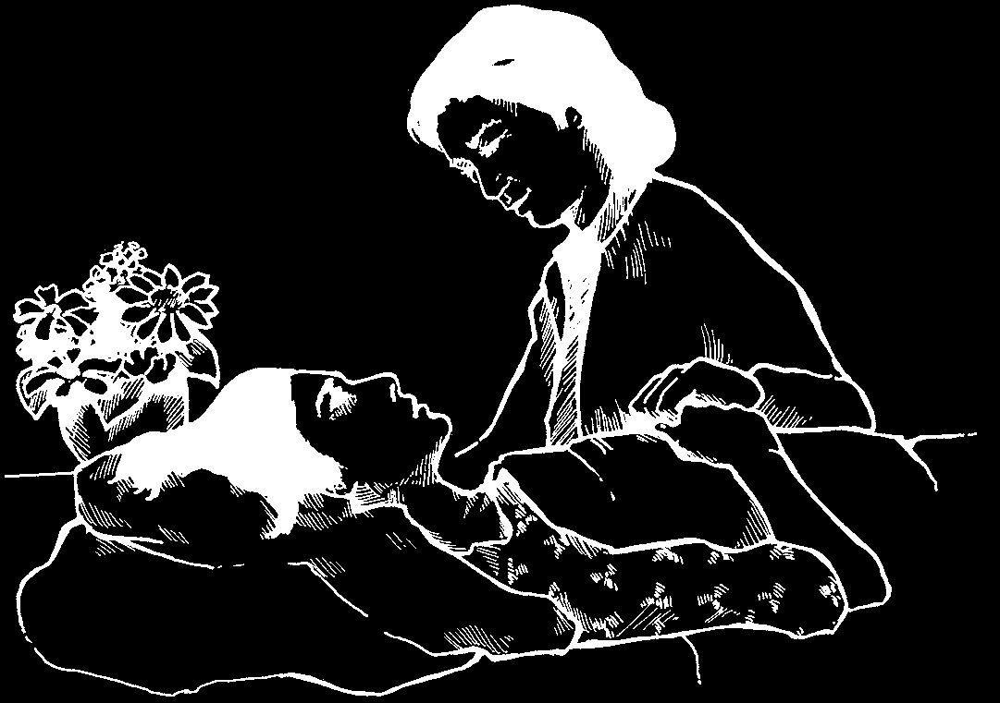
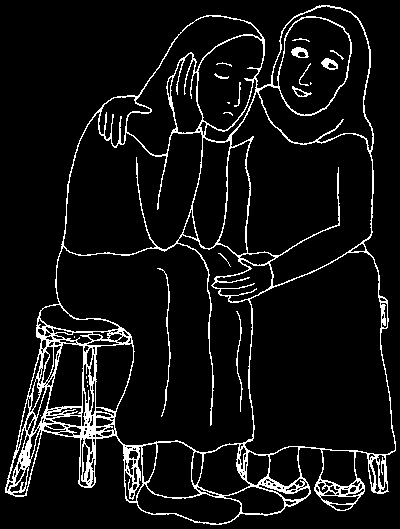
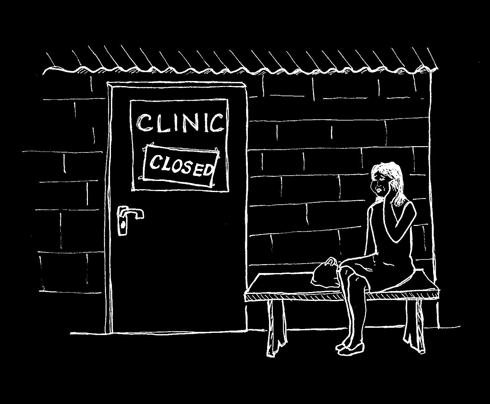

When you examine someone, alWays try to:
Wear glasses or goggles. Make sure you can see through them clearly.
Wear a clean cloth or mask over your nose and mouth. Try to change the cloth several times a day. Before wearing a cloth again, wash it in clean soapy water, rinse, and hang it in the sun to dry.
Wear clean gloves or plastic bags on your hands.
If possible, dental workers should always be protected so they can prevent
HIV from passing to themselves, the people they are treating, their families, and their sexual partners.


Always examine the lips, face, and inside the mouth of someone who wants advice about a dental
Before you examine problem. Look for any swelling, someone, always broken skin, sores, redness, explain carefully infection, or unusual color what you are going to do.
changes. For information about the most common problems caused by HIV, see page 178.
Look carefully inside the cheeks and lips. Ask the person to lift up her tongue so you can look underneath it. Also, ask her to stick her tongue out.
Wrap a small piece of clean cloth around the tip of the tongue and gently pull it forward so that you can see the sides of the tongue, the back part of the mouth and tongue, and as far down the throat as possible.
For more information on how to examine the mouth and teeth, see Chapter 6, pages 74 to 83.
It is important to ask about the person’s general health too. There may be other signs of HIV such as fevers, night sweats, feeling very tired all the time, weight loss, or diarrhea. Many people with HIV also become ill with tuberculosis or cancers. If the person has any of these problems, make sure he or she goes to see a health worker or doctor who is experienced with HIV.
Feel along the jaw, underneath the jaw bone, and on the upper neck to see if there are any lumps or pain.
Always tell the person what treatment you would like to give. After your examination, explain what you found and what can be done to help or prevent it from getting worse. Always ask the person for permission before you do any treatment, just as you should for any person you see.
No one else should know if someone has HIV, except for those the person wants to know. If you think it is important to tell others, always ask for permission first.
If you know or think someone is infected with
HIV, do not tell anyone else—even the person’s family.
Respect the privacy of a person with HIV as you would anyone who comes to you for dental care.
(See page 192, “Treat everyone with respect.”)
DENTAL CARE FOR A PERSON WITH HIV
In general, there is no need to change dental treatment because a person is infected with HIV. This is especially true if the person has no signs of
HIV. If there is already an infection in the mouth, use a mouth wash before treatment (see the “General Treatment” box on pages 178 and 179). This will help prevent the infection from getting worse.
Anyone with HIV has the right to get good dental care and to be treated with respect.
There are no special problems in doing simple fillings, or fitting false teeth
(dentures) for a person infected with HIV. But as the HIV infection advances to AIDS, you will be able to give better dental care if you know about any health problems the person may have. For example, if you need to take out a tooth, you must be extra careful not to cause an infection (see page pages 85 to 90). remember, always use clean, sterilized instruments, and when you give injections use only clean, sterilized needles and syringes, or disposables, so you do not cause infections. If you have any concerns about someone’s health, it may help to speak with a health worker.
Taking out a Tooth
To take out a tooth, follow all the guidelines in Chapter 11, page 157. In addition, to prevent infection for someone with HIV, before you remove the tooth, make sure the person’s mouth is as clean as possible. A mouth rinse can help (see the “General Treatment” box on pages 178 and 179).
To prevent infection and to help with healing, gently scale or scrape away the tartar (see page 127) from all the teeth. Be careful to do as little damage as possible to the gum and bone around the tooth you are taking out. An infected tooth socket (the hole that is left after you take out the tooth) in a person with HIV can be a serious problem. For problems after you take out a tooth, see pages 165 to 167.
In the later stages of HIV infection when the person has AIDS, the blood may not clot as quickly as normal. Be very gentle when you take out the teeth. Take only one tooth out at a time, and wait until bleeding is controlled before taking another one out.


COMMON PROBLEMS CAUSED BY HIV
AND HOW TO TREAT THEM
There are many infections that occur in the mouth, such as a cold sore or gum infection. Most of these infections are not caused by HIV and do not usually cause serious problems. But all infections are serious when a person has been infected with HIV because the virus makes the person’s body weak and unable to fight off infection. Smoking or chewing tobacco can also make problems in the mouth worse. Many infections for people with HIV, including mouth infections, can be prevented by taking 480 mg of cotrimoxazole 2 times a day with lots of water.
The main problems in the mouth for persons with HIV are:
1. white or yellow patches
4. cold sores or blisters
2. open sores
5. dark-colored skin patches
3. gum infections
6. dry or painful mouth and throat
General treatment
Always remove false or plastic teeth (dentures) before using any of these treatments.
Most of the problems in this chapter can be helped:
• if the teeth are kept clean by brushing or using a chewing stick every day, including false or plastic teeth.
• by rinsing the mouth several times a day with a simple mouth wash made with salt and clean water (see page 7).
• by gently cleaning any infection or sores with a clean cloth that has been moistened with salt water.
• by gently wiping inside the mouth (teeth, gums, all the soft inside skin) with a clean cloth.
Be careful if you use a chewing stick. Some wood is very hard and can hurt and damage the gums. The soft wood from the neem tree (which grows in many tropical countries) works well. You can also wrap clean cloth around the pointed end of a small stick or tooth pick and use it to carefully clean the teeth one at a time.
other treatments that can help are:
• chlorhexidine gluconate, 0.2%—a mouth wash that has no alcohol in it. Hold some in the mouth for 1 minute, 2 times a day. Make sure it covers the whole mouth inside, and then spit it out. This mouth wash reacts badly with some kinds of toothpaste. So wait 30 minutes between using this mouth wash and brushing your teeth.
• gentian violet, 0.5%—a purple-colored liquid that kills germs. Paint it onto the parts of the mouth that are infected.
Sometimes it may be necessary to paint the whole inside of the mouth. Try not to swallow any.
• povidone iodine, 1%—a brown-colored liquid that kills germs.
Hold some in the mouth for 1 minute, 2 times a day. Make sure it covers the whole mouth inside, and then spit it out (do not swallow any). Do not use for more than 14 days. Do not use if you are pregnant or breast feeding.
• hydrogen peroxide, 3% and clean water—(see page 8).
Mix hydrogen peroxide
Hold some
Spit it out and evenly with water—that is in the mouth repeat. Do this
½ cup of hydrogen peroxide for about every hour when with ½ cup of water.
2 minutes.
awake for 3 days.


1. White or yellow patches in the mouth
(thrush, oral candidiasis)
White, yellow, or (sometimes)
red patches. The patches in this picture are behind the bottom, front teeth, but they most often appear on the roof of the mouth and the top of the tongue.
Thrush is the most common infection in the mouth seen in people with
HIV infection. Thrush can also be a problem for people who do not have
HIV. For more information about this, see page 105.
SIGNS:
• A burning or swelling feeling in the mouth, especially when eating spicy foods. Because of pain, eating and swallowing become more and more difficult.
• The skin inside the mouth is usually covered with white, yellow, or red patches. If you try to remove the white patches with a clean cloth, they will come off, but sometimes leave a bleeding red surface underneath. In some people they may not come off easily.
In a few people, there are no white patches. Instead, the skin of the mouth is red and blotchy. It may look very rough.
• Sometimes there are painful cracks at the corners of the mouth that will not heal and sometimes bleed.

TREATMENT:
Gently scrub the tongue and gums with a clean cloth or soft toothbrush 3 or 4 times a day.
Then rinse the mouth with salt water and spit it out (do not swallow). In addition, if possible, use any ONE of these remedies:
• Put 2.5 ml (½ teaspoon) of nystatin solution in the mouth and hold it there 2 minutes and then swallow it. Do this 5 times a day for 14 days. OR,
• Use either gentian violet or chlorhexidine gluconate mouthwash, as described in the “General Treatment” box on page 178 and 179. OR,
• Cut or break a 100 mg clotrimazole vaginal insert into 2 pieces. In the morning, put 1 piece in the mouth and let it slowly melt there. Use the second piece at night. The package may say: “Do not take by mouth.”
This means do not swallow it. It is safe to let it melt in the mouth, making sure it covers the whole inside of the mouth, and then spit it out. Do this 2 times a day for 7 days (14 days if the infection is very bad). OR,
• Depending on how bad your problem is, suck one or two 100,000 unit nystatin lozenges, 4 or 5 times a day for 10 to 14 days.
If thrush is very bad, or if it moves into your throat and makes it hard to swallow, you may try one of these stronger medicines instead of the remedies above. (But do not take either of these medicines if you are pregnant or breastfeeding):
• Take 400 mg of fluconazole by mouth. The next day take 200 mg of fluconazole once each day for 14 days. But if you do not feel better in 3 to 5 days, increase the dose to 400 mg once each day. OR,
• Take one 200 mg tablet of ketoconazole, by mouth, once a day with food for 14 days.
Some people get relief from thrush when they paint the inside of the mouth with a little tea tree oil or yogurt.
tea tree

2. Sores of the skin of the mouth (ulcers)
Open sores (ulcers) that can appear anywhere in the mouth. Usually the skin around the sores is red. The sores in this picture are on the inside of the top lip.
Most people from time to time have had a small open sore (ulcer) in the mouth caused by an infection that has destroyed the skin in that area. It is usually painful and can make eating and speaking difficult for 1 or 2 weeks.
The ulcer heals if the mouth is kept clean. For people with HIV infection, the healing process can be very slow and sometimes the sore area in the mouth becomes very large. This is especially true if the person is taking anti-retroviral medicines to weaken HIV, such as zidovudine (AZT).
SIGNS:
The skin lining the mouth or on the tongue is broken and will probably look much redder than the skin that is not broken.
TREATMENT:
Keep the area clean to control the infection and to help the skin heal. Clean the sores with a cotton swab dipped in 1% povidone iodine. Or use any of the methods described in the “General Treatment” box on pages 178 and 179.
Also give antibiotics if:
• the skin around the ulcer is very swollen, AND
• you feel soft lumps (lymph glands) underneath the lower jaw bone.
Give 500 mg of amoxicillin by mouth, 3 times a day for 7 days. (Not safe for people allergic to penicillin. Anyone who is allergic to penicillin will also be allergic to amoxicillin and ampicillin).
OR 100 mg of doxycycline by mouth, 2 times a day for 7 days. (Not safe for women who are pregnant or breastfeeding).
OR 500 mg of tetracycline by mouth, 4 times a day for 7 days. (Not safe for women who are pregnant or breastfeeding).
OR 500 mg of erythromycin, 4 times a day for 7 days.

3. Infection of the gums
(Vincent’s Infection, trench mouth)
The skin around the teeth
(the gums) is painful, red and puffy with oozing yellow liquid (pus).
Many people have some infection of the gums around their teeth. The amount of infection depends on how clean the mouth is kept and how well a person’s body can fight off disease. If the mouth and gums are not kept clean, the infection may get so bad that it will spread to the jaw bone and other tissues nearby and the teeth will eventually loosen and fall out.
Because the body of someone with HIV infection is less able to fight off disease, any gum infection will quickly get worse if the person does not keep his mouth and teeth clean. This can be very serious. If a person with HIV loses his teeth and cannot eat, he will become even more ill.
SIGNS:
• The gums are red, puffy, and very painful.
• There may be yellow liquid (pus) oozing from the gum around one or more teeth.
• The gums between several teeth have sores (ulcers).
• The person’s mouth smells very bad.
If the infection of the gums is very bad and advanced (as it can be for a person with HIV), the signs may include:
• red, raw ulcers of the gums.
• the roots of the teeth will show.
• pieces of the jaw bone can be seen at the bottom of the ulcers.
• some teeth are loose.

TREATMENT:
• Keep the area clean to control the infection and to help the skin heal. Use any of the methods described in the “General
Treatment” box on pages 178 and 179.
• Very gently remove the tartar around the teeth. Be especially careful not to cause damage to the gums (see “Scaling Teeth”
on pages 127 to 133).
Also give antibiotics if:
• the neck is sore or stiff, and there are soft lumps just underneath the lower jaw bone.
Give 500 mg of amoxicillin by mouth, 3 times a day for 7 days.
Women who are pregnant or breastfeeding can use this treatment.
OR for persons allergic to amoxicillin, give 100 mg of doxycycline by mouth, 2 times a day for 7 days.
OR give 500 mg of tetracycline by mouth, 4 times a day for 7 days.
Do not give tetracycline to pregnant women because it can harm a baby’s developing teeth.
OR for women who are pregnant or breastfeeding, and are allergic to amoxicillin, give 500 mg of erythromycin by mouth, 4 times a day for
7 days.
• the gums between the teeth have ulcers, and the person’s mouth smells bad.
Give 500 mg of metronidazole by mouth, 2 times a day for 7 days.
Once the area is clean and the infection is controlled, take out any teeth that are very loose (see pages 157 to 161).
More serious gum infection
(gangrene of the face, Noma, Cancrum Oris)
SIGNS:
In the most severe gum infection, the jaw bone will become infected and this can spread through the cheek to the face. This will be very easy to see, as parts of the face and jaw rot away and smell bad. It happens mainly to very sick children (usually one to four years old), but can also happen to adults with HIV infection.
TREATMENT:
Get medical help as quickly as you can—in a hospital if possible.
In the meantime, use the information on pages 122 to 124 for cleaning and treating the gangrene.
The medicines (antibiotics) listed on page 123 are for children. For an adult, give the following:
For an adult who is able to swallow:
• give 400 mg of
• OR if you cannot get metronidazole by mouth, metronidazole give 450 mg of
3 times a day for 10 days, clindamycin by mouth, 4 times a day, for 5 days.
OR
• if clindamycin is not available give 500 mg of erythromycin by mouth, 4 times a day, for 10 days.
NOTE: Clindamycin, erythromycin, and metronidazole are OK to use for women who are pregnant or breastfeeding.
For an adult who cannot swallow:
• inject 2,000,000 (2 million) units of penicillin G into a large muscle,
3 times a day, for 7 days.
for an adult who is allergic to penicillin,
• inject 600 mg of clindamycin into a large muscle, 4 times a day, for 5 days.
If you give the medicines by injection, change to medicines by mouth once the person starts to feel better. But do not stop giving the medicines until the 7 to 10 days have passed.

4. Cold sores or fever blisters
Painful red blisters on the gums that have burst open and become small, open sores.
Many people get cold sores or fever blisters caused by the herpes virus.
People who become infected with herpes carry the virus forever. Most people are infected as children. The herpes sores can come and go. For more information, see page 104.
The herpes sores usually heal after 1 or 2 weeks. But for persons infected with HIV, the sores come more often and last much longer.
SIGNS:
1. One or more small, sometimes painful, red blisters appear on the lips and skin around the mouth. In people with HIV infection, they also appear just inside the lips, and on the gums and the roof of the mouth.
2. The blisters burst and become small open sores that often spread into each other.
3. After the blisters on the lips burst, a yellow crust forms over them.
The herpes sores can pick up other infections, particularly in people with HIV infection. Also, the liquid inside the sores and blisters can spread infection. If herpes is spread to the eyes, it can cause blindness. Keep fingers and hands away from sores because they contain very active virus. It is very important to wash the hands before and after touching the face or eyes.

TREATMENT:
Medicine cannot kill the herpes virus. Keep the area clean to control any infection in the sores and to help them heal. Keep fingers and hands away from the sores, and drink lots of fluids. Use any of the methods described in the “General Treatment” box on pages 178 and 179.
Also:
• Begin treatment as soon as you feel a tingling, before the cold sore appears. This may stop the sore from developing or developing so severely.
• A medicine called acyclovir may also help.
Give 200 mg by mouth, 5 times a day for 7 to 10 days. You can also apply a small amount of acyclovir ointment on the sores 6 times a day for 7 days. It is
OK to use them both at the same time.
Acycolvir works best if taken or used early in the infection, before the blisters burst, if possible.
• If the sores are infected, give 500 mg of amoxicillin, 3 times a day for 7 days.
OR for persons allergic to amoxicillin, give 100 mg of doxycycline,
2 times a day for 7 days.
OR for a woman who is allergic to penicillin, and is pregnant or breastfeeding, give 500 mg of erythromycin, 4 times a day for 7 days.
• Antibacterial ointments such as neomycin or bacitracin can also help to prevent and control other infections that get into the sores. Stop using the acyclovir and spread a small amount of anti-bacterial ointment on the infected skin outside the mouth (not in the mouth) 2 to 5 times a day for about 5 days.
• To help ease the pain of sores outside the mouth, stop using acyclovir and cover the area with a dry powder, like baby powder, talc, or cornstarch. Do not use medicated powders as they can make the open sores sting very badly. Wash hands carefully before and after using powder.

5. Red or purple patches in the mouth
(Kaposi’s sarcoma)
Painless, red-, brown-, or purple-colored patches (that look like swollen bruises). They can appear anywhere in the mouth. The patches in this picture are on the top (roof) of the mouth.
Some people infected with HIV will get red- or purple-colored patches in the mouth. These patches are called Kaposi’s sarcoma and they can also appear elsewhere on the body. Kaposi’s sarcoma can be an early sign of
HIV infection.
SIGNS:
Painless patches that look like swollen bruises around or inside the mouth. The red or purple color is more obvious in the mouth. The patches rarely become infected and painful, usually only if they burst.
TREATMENT:
Get advice from a health worker or doctor who is experienced with the problems of HIV.
People who are taking antiretroviral medicines (ARVs) tend not to get this kind of cancer.
And starting treatment with
ARVs can keep it from getting worse. Sometimes very strong anti-cancer medicines are used.
Also, some medicines for treatment of varicose veins can be helpful.

6. Dry or painful mouth and throat
Many people with AIDS have difficulty eating near the end of their lives because of a dry or painful mouth and throat. But it is important to eat nutritious food during a sickness, even a serious sickness like AIDS. The person will feel much more comfortable and have less pain and infection if he or she can eat well.
A dry mouth can be caused by an infected swelling in the glands of the mouth that usually make spit (saliva). This is most common for people taking ARVs (anti-retroviral medicines). A painful mouth can be caused by other infections and problems that come with HIV and AIDS.
For information about how to treat an infection of the spit gland, see page 119. For help with eating if the mouth is very dry or sore, try the following:
• Eat soft foods in small pieces that are easy to chew and swallow.
• Cook foods until they are soft and tender.
• Mix foods with liquids to make them easier to swallow.
• Keep a small bottle of drinking water with you all the time.
• Use a straw to drink fluids.
• Do not eat hot or spicy foods. They can irritate a sore mouth and throat.
• If it is difficult to swallow, tilt the head back a little, or move it forward.
• Rinse the mouth with clean water often. This will remove food and germs, and help with healing.

HELPING PEOPLE WITH HIV IN YOUR COMMUNITY
As a dental worker or health worker, you can make a great difference in the well-being of both the person with HIV and his or her family. Take a special interest in them and help them find ways to get the care and companionship they need.
Care During the Final Days
During the final days of their illness, most people with AIDS prefer to be at home with their families. Both the sick person and the family need a lot of care and help during this time. This includes care for health problems and personal needs, as well as help with social and legal issues.
You can support the family if you organize volunteers in the community to:
• provide food and cook meals.
• help with daily household chores.
• look after babies and children whose parents are dying, or who may have already died.
• help with funeral arrangements.
It may also help to ask other family members, friends, or a religious leader to visit the family and the person who is dying. This support can help the sick person to die with dignity, and the family to cope with losing a loved one.

WORKING FOR CHANGE IN YOUR COMMUNITY
By teaching and talking about HIV, dental workers can play an important role in helping to stop the spread of the disease.
Treating people with HIV infection helps to prevent its spread.
You can help if you:
• Learn as much as you can about HIV, how it is spread, and how to prevent it.
• Share your knowledge about HIV with others in community meeting places—like schools, stores, religious meetings, restaurants and bars, and military bases.
• Teach people how to practice safer sex to stop the spread of HIV. Safer sex is when no body fluids pass from one person to another during sex.
• Educate people about the importance of using clean needles for injections. In hospitals and health centers, make sure your needles come out of a sealed, sterile packet. Set up needle exchange programs for IV drug users in your community.
Practice Safer Sex
Safer sex means to:
• have sex with only one partner who has sex only with you.
• always use condoms during sex, and help women learn how to ask men to use them.
• think of other ways to have pleasure, such as touching genitals with the hands, and rubbing or massaging different parts of the body.
• not have sex with someone who shares drug injection needles.
If the whole community has good information about HIV and safer sex, men and women and their partners may feel more comfortable making changes in their sex lives to protect themselves. No one has become infected with
HIV because he or she spoke openly and honestly about safer sex.


Although it can be difficult to speak openly about sex, to help prevent the spread of HIV it is necessary to talk about what is risky sex and what is safer sex.
How risky are different kinds of sex?
sex in the anus without a condom sex in the vagina without a condom sex with many people sex when the vagina is dry sex with someone who has had sex with many people sex without ejaculation
(“pulling out”)
sex using a diaphragm sex with only one person who only has sex with you oral sex
(mouth on penis or vagina)
sex using a condom kissing or touching mutual masturbation
Treat Everyone with Respect
All people have a right to be respected, including people who have HIV. Set an example in your community by supporting people with HIV, their partners, and their families. Some people think AIDS is a “disease of outsiders“ or of
“bad” people. They think HIV does not affect “good” people like them. But
HIV affects rich and poor people, men and women, people of all races and religions, health workers, and religious leaders.
Many people are afraid to take the HIV test or seek treatment because they think they will be treated badly. We must all take care not to let our fear of
HIV and AIDS make us treat people unfairly. Anyone who is ill should be cared for with kindness and respect.

As a health and dental worker, you and other community and religious leaders can help people with HIV get health services, housing and jobs.
You can help people treat each other with respect, and you can encourage people who have HIV to become involved in their treatment and in their community’s activities.
remember, you can help support the human rights of people living with HIV or someone who people think is living with HIV. Discriminating against them violates HIV is not a curse or a their human rights.
punishment.
Set an Example and Share Good Information
The example you set and the information you share will help fight the fear people have of knowing, touching or living with someone who has HIV.
Make sure people know that HIV is not spread by ordinary daily contact. HIV is not spread by hugging, touching, holding or shaking hands, by dancing, using the toilet after someone with HIV, or eating food prepared by a person with HIV. People can share dishes, towels, and bed sheets and not become infected with HIV. Also, it is not possible to get infected from someone’s tears, sneeze or spit, or from a mosquito bite.
Other viruses such as measles or chicken pox are spread easily through the air. But HIV spreads only if certain body fluids of a person with HIV get inside another person.
As a health worker, you can help people make decisions based on good information and not fear. A good way to begin is to plan a meeting to discuss
HIV with other health workers in your area or region and with someone from a regional HIV organization. He or she can help health workers learn about
HIV so they will be able to provide accurate, consistent information to the people in their communities. They can also learn about the best ways to treat the infections that people with HIV often get.
A person with HIV can get sick very easily with many common health problems such as pain, cough, skin rashes, fever and diarrhea. For information about these problems, see Where There Is No Doctor, or another general medical book.

fOLLOW YOUR OWN ADVICE
As a dental worker and health leader, you can have a great impact on your community’s health and well-being if you set a good example. It is not enough just to give health education talks and tell people how to behave. As you talk to people about the importance of practicing safer sex, you must remember to also practice safer sex with your own sexual partner. A dental worker who does not practice safer sex can become infected with HIV and pass the virus to others.
Here is an example of what can happen to dental workers if they do not follow their own advice:
Two years ago, in one region of a country, there were 15 health centers that provided dental services. Today, 5 of the centers can no longer provide these services because their dental workers—all men—have died from AIDS. Also, 2 of the
15 students in a recent dental training course—a man and a woman—have HIV. No one knows exactly how each one got infected with HIV, but most people believe it was because they were not careful with their sexual partners. The dental workers and students gave many health education talks to tell people how to behave, but people in the community could see that they did not follow the advice themselves.